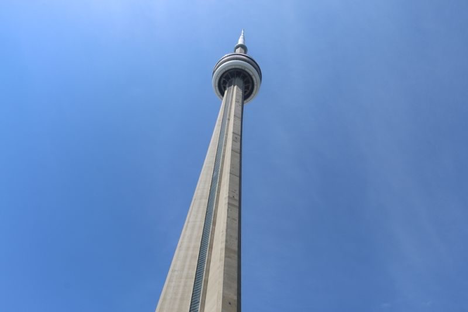
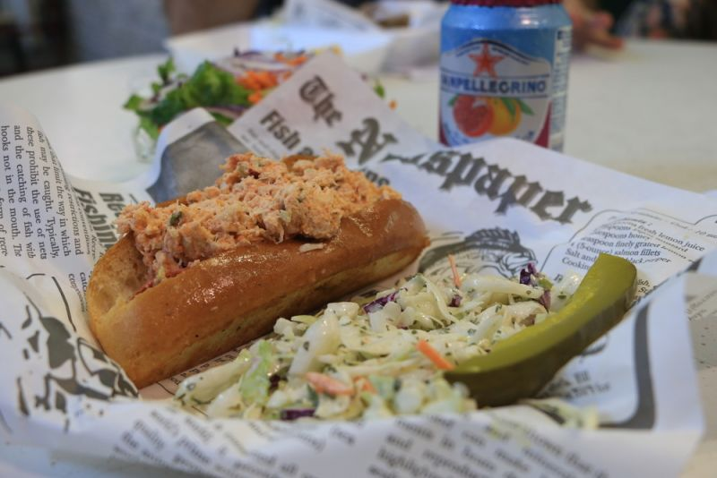
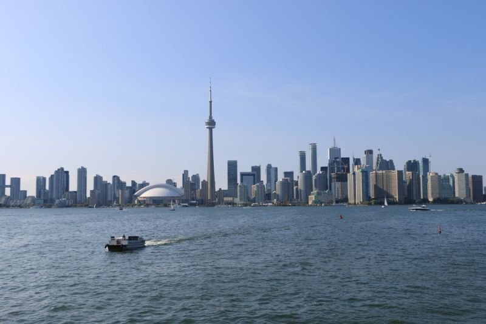
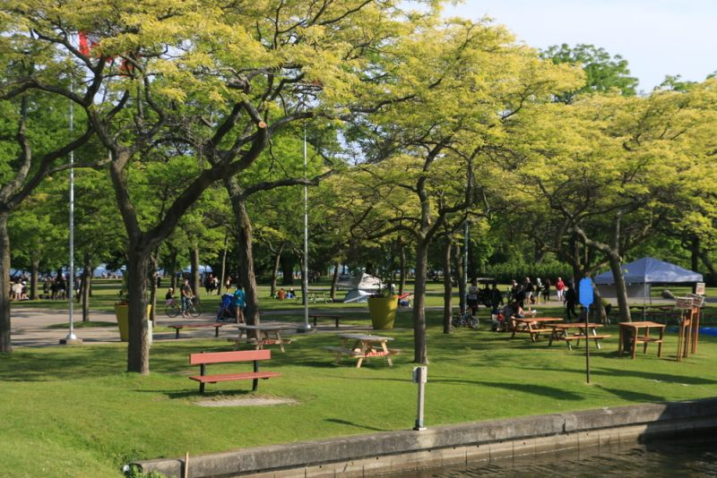
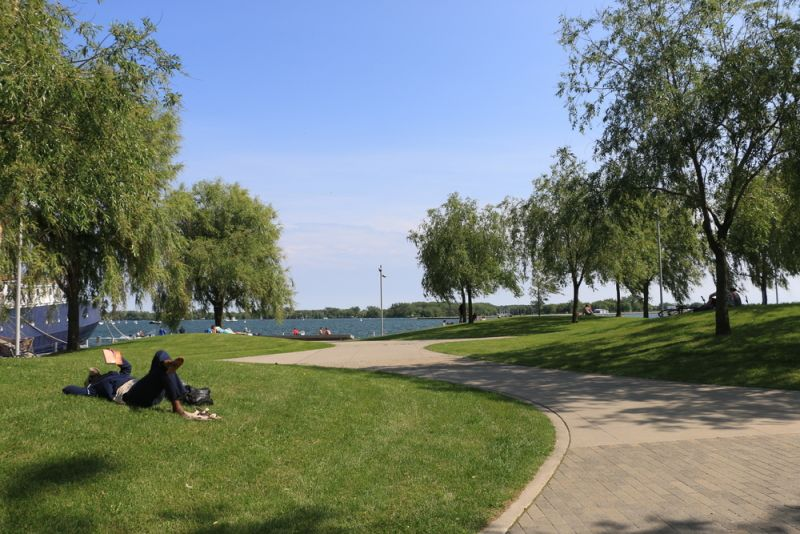
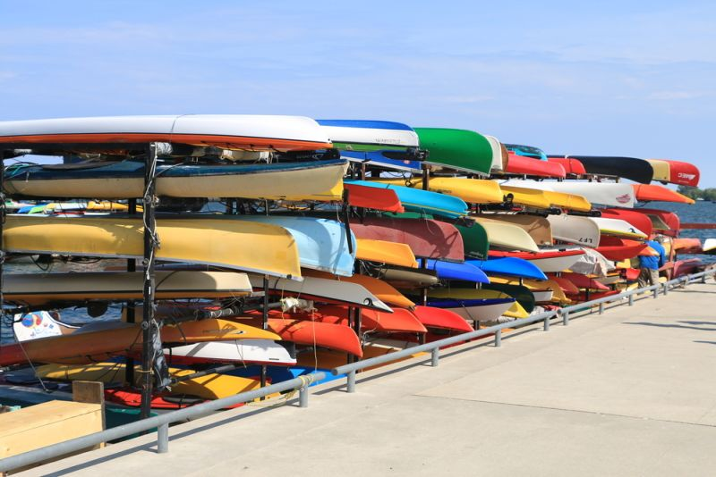
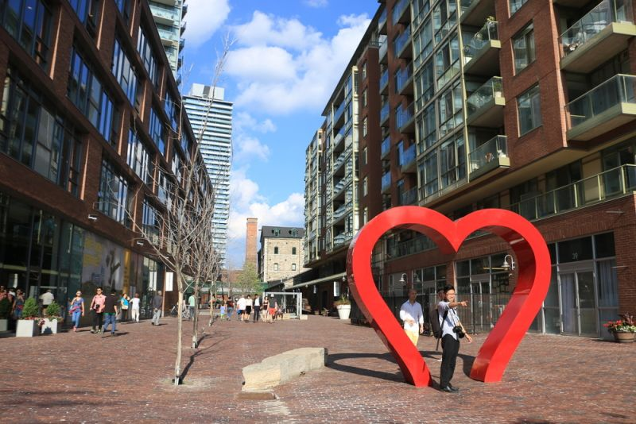
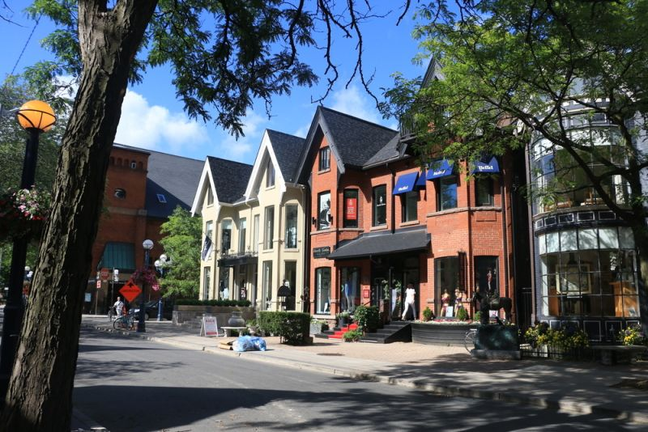

| Voltar para pagina inicial |
| Conhecendo Toronto |
|
Com aproximadamente 6 milhões de habitantes, Toronto é a maior cidade do Canadá, e capital da província de Ontário, sendo também a quarta cidade mais populosa da américa do norte. Além disso, Toronto é o mais importante centro da vida financeira, industrial e cultural do Canadá, além de boa parte da sua população ser formada por imigrantes de diversos lugares. |
Mapa: |
|
Como é o clima em Toronto:
Cientificamente falando, o clima na cidade é continental úmido, mas para você entender melhor, significa que o verão realmente é quente, e o inverno é mesmo frio. Porém, as temperaturas em Toronto podem ser um pouco imprevisíveis. Para você ter uma noção, o dia pode começar marcando 25ºC e terminar em 10ºC. Como vimos acima, o calor está presente no verão e as temperaturas vão variar entre 16ºC e 30ºC. Ótima época para fazer intercâmbio em Toronto e aproveitar os passeios. Na primavera, as temperaturas podem variar entre 4ºC e 18ºC, ou seja, pode ter dias um pouco mais frios e dias mais fresquinhos. Já no outono, as temperaturas ficam entre 10ºC e 19ºC, e apesar de chover um pouco durante essa estação, a cidade fica linda, cheia de tons amarelados e alaranjados. O inverno, como vimos, realmente faz frio e a neve está bem presente durante esse período, e as temperaturas ficam entre -2ºC e 10ºC, com sensação térmica de -15ºC. Porém, se você acha que não deve fazer intercâmbio em Toronto durante o inverno, não se engane. A cidade se prepara pra receber turistas durante essa época do ano e tem muita coisa legal para fazer por lá, como patinação do gelo, exposição de esculturas de gelo e vários festivais. |
| A CN Tower, um dos ícones de Toronto, é um passeio imperdível, lindíssimo e que permite admirar toda a cidade do alto. A paisagem é maravilhosa e quem não se contenta em vê-la só pelos mirantes, pode aproveitar a viagem para fazer um passeio pelo lado de fora da torre, a 365 metros de altura! Caminhar pelos largos quarteirões de Downtown é um programa clássico que leva aos principais pontos turísticos, entre eles a Yonge-Dundas Square, principal praça da cidade e cheia de movimento, o centro comercial Eaton Centre, a cervejaria Steam Whistle, o St Lawrence Market, um mercado com um monte de coisas gostosas para comer, e o bairro boêmio Distillery District. |
|         |